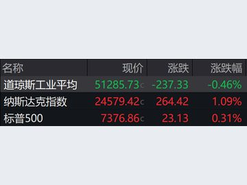
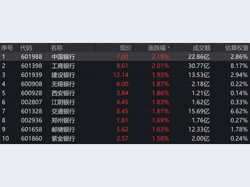
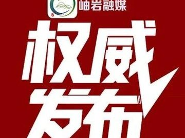
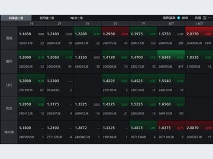

07
看营口金属产业如何向价值链高端攀升
辽宁（营口）沿海产业基地有两家门对门的超级工厂，营口建发盛海有色科化有限公司和营口象屿铝业有限公司，一家是全球最大的铜冶炼单体工厂…

【国务院常务会议：完善资本市场稳市机制；持续化解地方政府债务、中小金融机构等领域风险】
2026年渐近尾声，如何扩大内需仍受关注。从三季度经济数据来看，总体保持供给强、出口强、内需偏弱局面，前期政策效果仍有待释放。
-完善资本市场稳市机制，增强股市内在稳定性，促进资本市场平稳健康发展； -加快重大项目和“六张网”建设实施进度，支持企业扩大设备更新、无形资产等投资。

在银行业绿色贷款规模持续扩容之后，绿色金融发展重心正转向提质增效，绿色信贷创新产品密集落地。
国家数据局数据显示，2025年末，我国日均词元（Token）调用量突破100万亿，较2024年初增长超1000倍。
11月9日，银行先抑后扬，延续强势，银行ETF华宝（512800）标的指数收涨0.88%。

辽宁（营口）沿海产业基地有两家门对门的超级工厂，营口建发盛海有色科化有限公司和营口象屿铝业有限公司，一家是全球最大的铜冶炼单体工厂…
11月9日，据企查查公开信息，近日，中科顺镁（辽宁）科技有限公司成立，注册资本为1000万元，经营范围包含：耐火材料生产；耐火材料销售；水泥制品制造；

11月4日，人民日报客户端以《鞍山与南京共商老工业基地“智改数转”》为题，报道了宁鞍产业科技协同发展对接会近日在鞍山举行…
为搭建高效电力交易对接平台，优化我县工业用电配置，减轻企业用电负担，在成功举办 2026年度电力交易会议的基础上…

财联社11月9日讯（编辑 李响）今日早盘资金偏紧，债市整体走弱，超长债虽小幅走强但持续性有待观察。

市场大幅低开后弱势震荡，创业板指跌近4%，科创50指数冲高回落。沪深两市成交额1.66万亿，较上一个交易日缩量4602亿。全市场超4700只个股下跌。